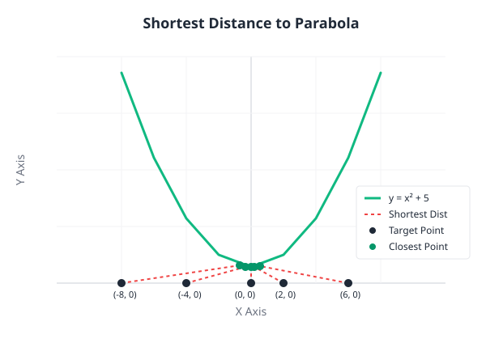
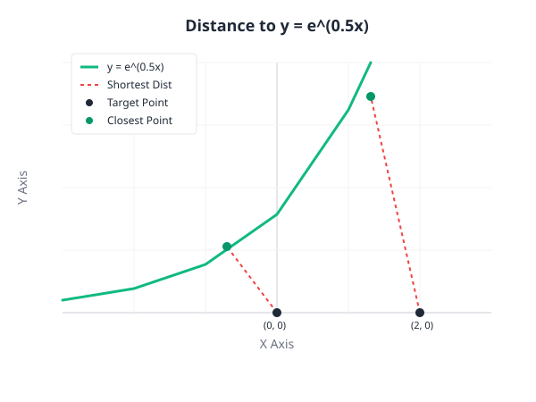
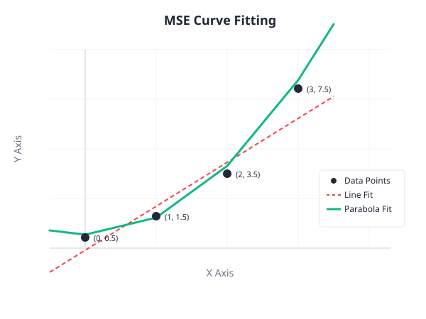
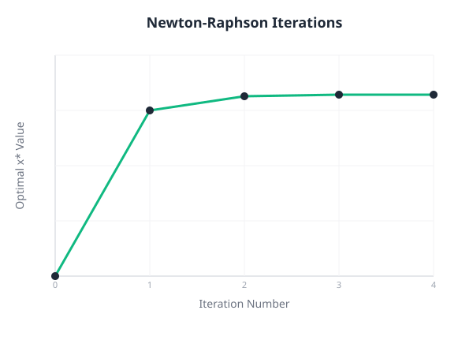
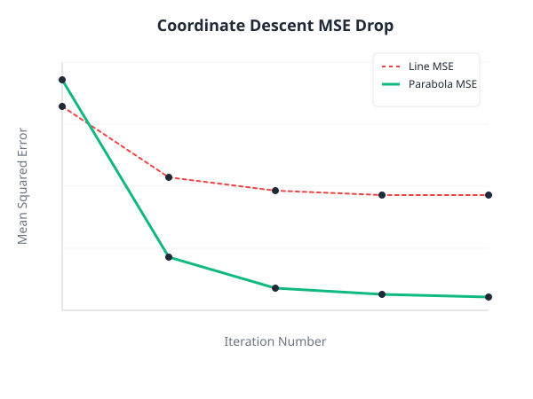

Minimizing the squared distance D(x) from external target points to the continuous mathematical curve y = x² + 5 using numerical root-finding algorithms.
| Target Point | Newton x* | Secant x* | Shortest Distance |
|---|---|---|---|
| (0, 0) | 0.0000 | 0.0000 | 5.0000 |
| (2, 0) | 0.1802 | 0.1802 | 5.3514 |
| (-4, 0) | -0.3547 | -0.3547 | 6.2898 |
| (6, 0) | 0.5262 | 0.5262 | 7.6032 |
| (-8, 0) | -0.6861 | -0.6861 | 9.1336 |

Validating the Newton-Raphson implementation on an exponential curve y = e^(0.5x).
| Target | Optimal x* |
|---|---|
| (2, 0) | 1.3090 |
| (0, 0) | -0.7034 |

Analytical derivatives for Part 1 and normal equations for Part 2.
Fitting models to an overdetermined linear system where the number of equations exceeds parameters (M > N). We use coordinate descent to minimize the squared residual error, matching the analytical pseudo-inverse solution x* = (AᵀA)⁻¹Aᵀb.

Plotting intermediate steps reveals how algorithms minimize error. Newton's method shows rapid, accelerating convergence towards the root by utilizing curvature (Hessian). Coordinate Descent steps sequentially along one axis at a time, showing a steep initial drop in MSE that smoothly levels off at the global minimum.


for i in range(max_iter):
d_p = 2*(x - x0) + 2*(f(x) - y0)*df(x)
d_pp = 2 + 2*(df(x)**2) + 2*(f(x) - y0)*ddf(x)
step = d_p / d_pp
x_next = x - step
if abs(x_next - x) < tolerance:
x = x_next
break
x = x_nextfor _ in range(max_iter):
f1 = dp(x1)
f2 = dp(x2)
if abs(f2 - f1) < 1e-14:
break
x_new = x2 - f2 * (x2 - x1) / (f2 - f1)
if abs(x_new - x2) < tolerance:
x2 = x_new
break
x1 = x2
x2 = x_newdef fit_line_coord_descent(x, y, i=10):
m, c = 0.0, 0.0
for _ in range(i):
c = np.mean(y - m * x)
m = np.sum(x * (y - c)) / np.sum(x**2)
mse = np.mean((m * x + c - y)**2)
return m, c, mse